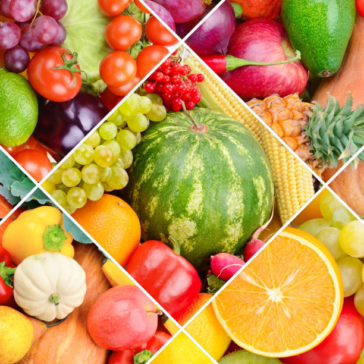
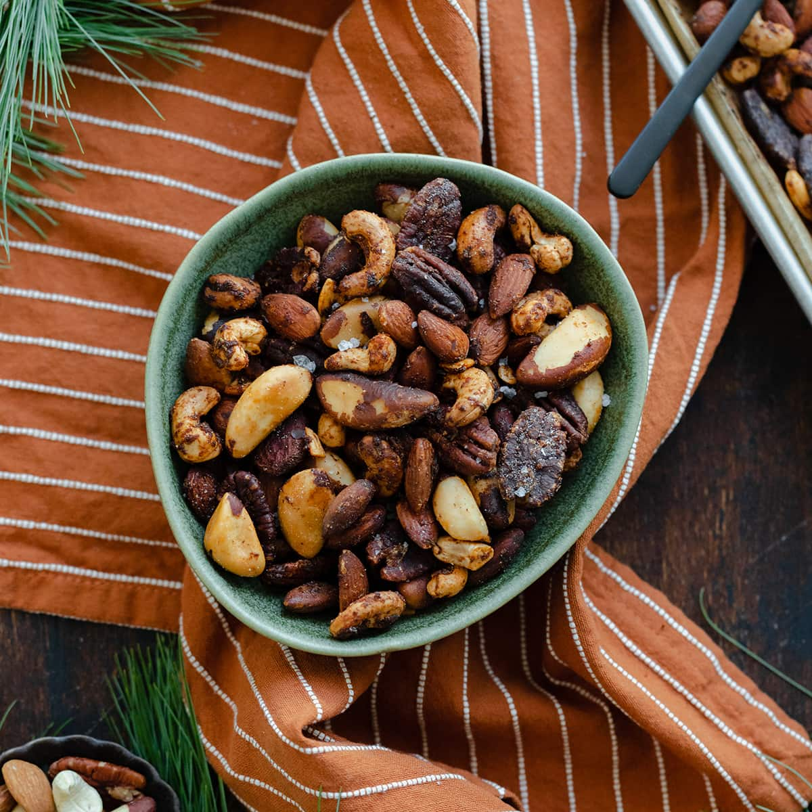
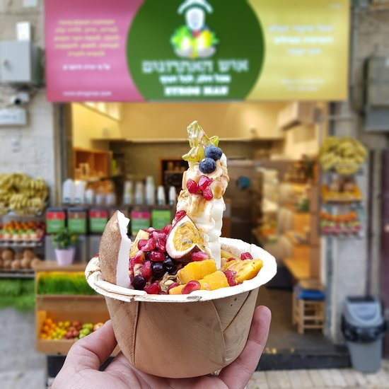
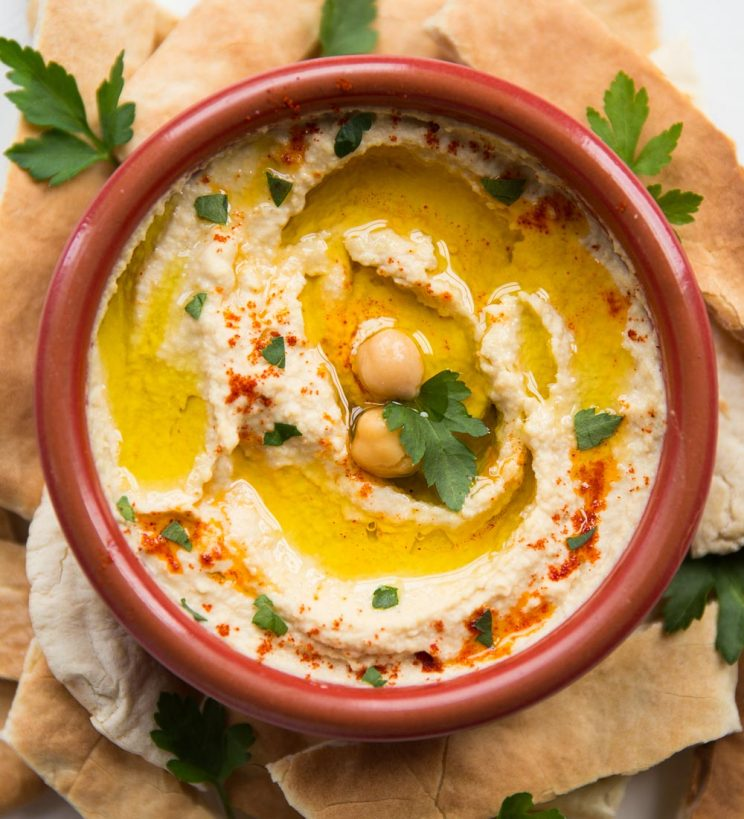
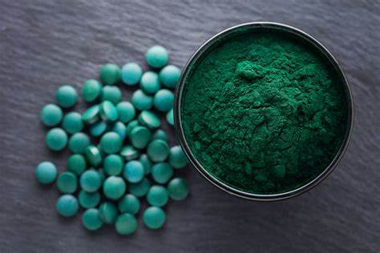

New Deli
New Deli is an indian style fast food chain which focuses on sanwhiches. It offers meat sadwhiches which
are customizable at a low price for israel, 25 ₪. It also sells fries which are ok as fuel for coding
lessons. We reccomend splurging the extra 10 shekels on the sandwhich to get the Philly Steak, it's
totally worth it.
Machnei Yehudah
The Jeruslem shukh is the term for an unpredictable variety of people, fresh
food shops, spices and restaurants of cultures from around the world cooked and served by Israeli
people. You can
either
buy an apple in a store or walk a few shops down and pay four times the price to have someone blend it
in a juicer and serve it in a cup.
Fresh fruit and Veg

There are some shops selling that healthy colourful stuff for a pretty
reasonable
price in the shukh. You can usually barter the price down if you think a few shekels are worth
your time.
Spices and Nuts

Salted nuts and addictively spicy powders are all around the shukh. These tend
to be very
over priced but also very good quality. You feel like you're buying from a pirate when they're
scooping it out of a barrel.
The people
The shukh can be a very crowded place. It's unclear whether it's indoors or
outdoors but people smoke there. The crowds show Jerusalem's demand to eat healthy local food.
Everything Else

There's shops selling fresh pitta, baklava and other pastries,fresh fish and
also meat. There's also juice shops, sweet shops, restaurants selling street food, sushi or a
shwarma. Whatever you want to eat the Shukh has it.
Etrog Man

Much like New Deli, etrog man's smoothies have cult like popularity in Jerusalem. They
are dotted around the city with much competition from other smoothie places. They serve smoothies and
take pricing out of Apple's playbook, going from a 3 shekel shot of juice to over 50 for a freshly made
shake with mix ins. The only comparison in popularity is Golda Ice cream in Tel Aviv.
They also sell skin products made from etrog which are apparently good for your skin. I just think they're trying to find a use for all the etrog's after Succot. If you're particularly unlucky they'll spray you in the face with some etrog juice and insist it's good for your skin. It's a lovely treat to get sprayed in the face.
They also sell skin products made from etrog which are apparently good for your skin. I just think they're trying to find a use for all the etrog's after Succot. If you're particularly unlucky they'll spray you in the face with some etrog juice and insist it's good for your skin. It's a lovely treat to get sprayed in the face.
Israeli Health Tea
Some place I had dinner at had an amazing tea called israeli health tea. I've googled it
and apparently it's not a real thing. It was really good though so I think it should become a thing.
It's a cinnamon stick, mint leaves, apple, orange and honey. When it's good it is on the same level as
Chicken soup at kicking colds. Drink this and you can try convince yourself you're embracing israeli
culture.
HUMMOUS

Hummous is a staple all over the world but Jerusalem is the Capital of Hummous.
Some people say it's just Tahini, Olive oil, lemon, chickpeas and parsley. These people will never find love
or hapiness. If you want to cause chaos ask a group of people where the best hummous place is and
watch the argument become insulting on a personal level, abusive and violent.
Spirulina
Spirulina is a dried and processed algae Israel produces a very large amount of. For dried lake goo
it's incredibly healthy for you. It has more calcium than milk without any of the sugar, so a plant
is better at being milk than milk is. It comes as a tub of expensive powder you sprinkle in food.
Will you notice a difference to your life from this stuff? Probably not. But you will probably feel
better for doing something healthy for yourself.
